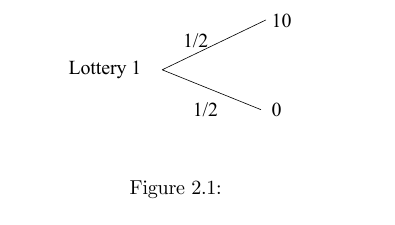
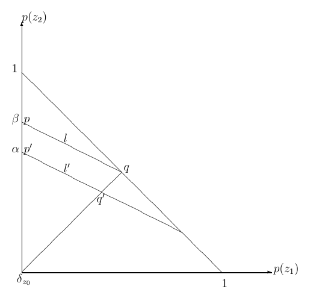
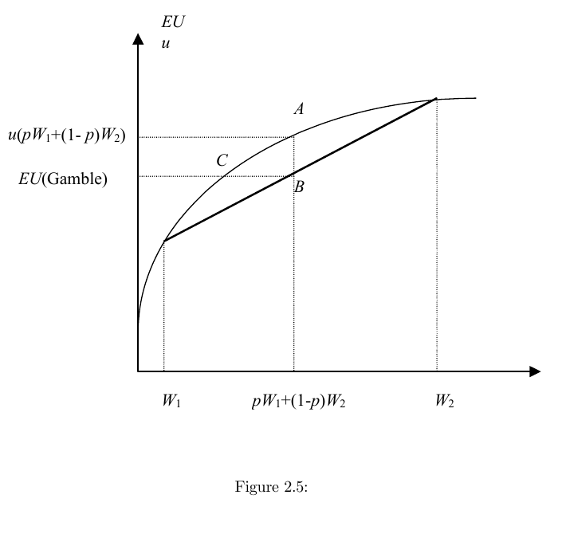

The first lecture treated payoffs as given. This chapter explains what those payoffs mean. A game-theoretic payoff is not merely a ranking of final outcomes; it is a compact representation of how a player compares uncertain consequences induced by beliefs about the other players' actions.
2.1 Choice under certainty
Start with a set $X$ of mutually exclusive, exhaustive alternatives. A decision maker's weak preference relation $\succeq$ compares alternatives: $x \succeq y$ means that $x$ is at least as good as $y$.
Strict preference and indifference are derived from weak preference:
A utility function assigns numbers to alternatives so that better alternatives receive larger numbers.
The last sentence is the key. Utility under certainty is ordinal: only the order matters. The numerical gaps between utility values carry no independent meaning.
2.2 Decision making under uncertainty
Let $Z$ be a finite set of prizes. A lottery is a probability distribution $p:Z\to[0,1]$ with $\sum_{z\in Z}p(z)=1$. For example, the lottery below gives $10$ with probability $1/2$ and $0$ with probability $1/2$.

In games, players usually do not know what the others will do. If a player has beliefs about the others' actions, each of his own actions induces a lottery over final outcomes. This is why game theory needs a theory of preference over lotteries, not just over sure prizes.
This definition has two layers. First, $U$ is an ordinary utility representation of preferences over lotteries. Second, it has the special expected-utility form: the utility of a lottery is the probability-weighted average of utility over prizes. For the lottery above, $U=\frac12u(10)+\frac12u(0)$.
The three axioms
The VNM representation is not automatic. It follows from three assumptions about preferences over lotteries.
Independence says that mixing both options with the same background lottery should not reverse the comparison. One interpretation is dynamic consistency: if the decision maker prefers $p$ to $q$, he should still prefer "first toss a coin, then get $p$ on heads and $r$ on tails" to the corresponding compound lottery with $q$ replacing $p$.
Continuity rules out infinitely good or infinitely bad prizes. It is mostly technical, but it makes the utility representation finite and well behaved.
Independence has a geometric implication. If $p\sim q$, then for any $r$ and $\alpha\in[0,1]$,
\[ \alpha p+(1-\alpha)r \sim \alpha q+(1-\alpha)r. \]With three prizes, lotteries can be drawn as points in a triangle. The implication above makes indifference curves straight, and repeating the argument from different base lotteries makes them parallel.

VNM utility is therefore cardinal in a limited sense. Positive affine transformations preserve preferences over lotteries; arbitrary increasing transformations need not. This is the difference between saying "only the order of sure prizes matters" and saying "utility gaps matter when computing expected utility."
2.3 Modeling strategic situations
Consider two players, Alice and Bob, with strategy sets $S_A$ and $S_B$. If Alice plays $s_A$ and Bob plays $s_B$, the outcome is $(s_A,s_B)$. Alice does not know Bob's strategy when choosing, so a belief $\mu_A$ over $S_B$ turns each Alice strategy into a lottery over outcomes.
Under the VNM assumptions, we do not need to list Alice's preference over every possible lottery separately. We can summarize her preferences by a payoff function
\[ u_A:S_A\times S_B\to\mathbb{R}, \]and similarly for Bob. This is the mathematical justification for putting numbers in payoff matrices.
| Alice | L | R |
|---|---|---|
| T | 3 | −1 |
| B | 0 | 0 |
2.4 Attitudes toward risk
Now specialize prizes to money and write $u:\mathbb{R}\to\mathbb{R}$. A fair gamble has expected monetary value $0$. A risk-neutral decision maker is indifferent between accepting and rejecting every fair gamble, which happens exactly when $u$ is linear. A strictly risk-averse decision maker rejects every nontrivial fair gamble, which corresponds to strictly concave $u$. Risk seeking corresponds to convex $u$.
- risk-neutral if $u$ is linear;
- risk-averse if $u$ is concave;
- risk-seeking if $u$ is convex.
For a concave utility function, the utility of expected wealth lies above the expected utility of risky wealth:
\[ u(pW_1+(1-p)W_2) \ge p u(W_1)+(1-p)u(W_2). \]The vertical gap is the utility cost of risk. In money terms, it becomes the most the person would pay to replace the risky gamble with a sure amount.

Risk sharing
Let $u(x)=\sqrt{x}$. A person owns an asset that pays $100$ with probability $1/2$ and $0$ with probability $1/2$. The expected utility is
\[ \frac12\sqrt{100}+\frac12\sqrt{0}=5. \]If two identical people pool independent copies of this asset and each owns half the pool, each person's share pays $100$ with probability $1/4$, $50$ with probability $1/2$, and $0$ with probability $1/4$. Expected utility becomes
\[ \frac14\sqrt{100}+\frac12\sqrt{50}+\frac14\sqrt{0}\approx 6.0355. \]Risk sharing raises expected utility because the pool smooths each person's payoff.
Insurance
Keep the same risk-averse agent and add a risk-neutral insurer. Full insurance pays $100$ exactly when the asset pays $0$. If the premium is $P$, the insured person's wealth is $100-P$ for sure. He buys insurance when
\[ \sqrt{100-P}\ge \frac12\sqrt{100}+\frac12\sqrt{0}=5, \]so $P\le 75$. The risk-neutral insurer receives $P$ for sure and expects to pay $50$, so it is willing to sell when $P\ge 50$. Any premium in $(50,75)$ benefits both sides.
2.5 Takeaways
The chapter's modeling lesson is narrow but central. Payoff numbers in a game are VNM utility numbers. They summarize how a player evaluates lotteries over outcomes, and they are unique only up to positive affine transformations. As a result, replacing payoffs by an arbitrary increasing transformation preserves rankings of sure outcomes but can change preferences under uncertainty, and therefore can change the game.